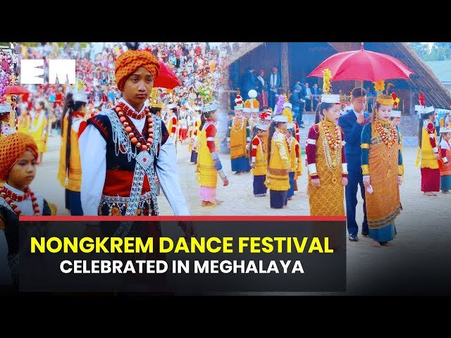
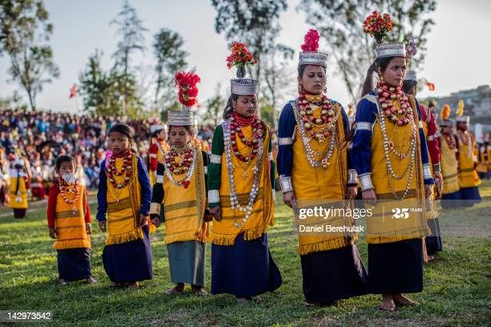
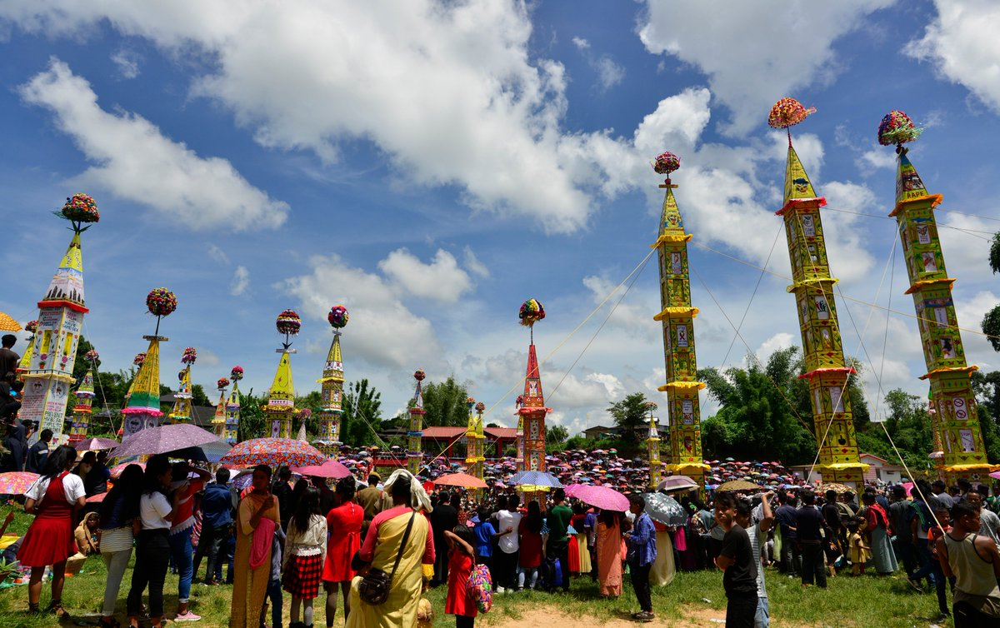
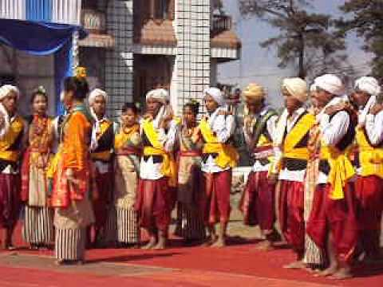

The festivities in Meghalaya seem to be incomplete without dancing and music. Dance in Meghalaya forms an important part of the Meghalaya
society: birth, marriage, annual festivals, etc. some of the Meghalaya dance are (shad sukmysiem, shad nongkrem, derogata, do dru Sua, laho, etc.)Traditional
folk dances in the state of Meghalaya are generally held in public places in the open ground. Different communities have different dance forms
for instance, Khasis, Garos and Pnars.

Nongkrem: Nongkrem Dance is a religious festival in thanksgiving to God Almighty for good harvest, peace
and prosperity of the community. the capital of the Khyrim Syiemship near Shillong.

Shad Suk Mynsiem: This is a colourful thanksgiving festival celebrated during the spring season all over Khasi Hills.
Virgins and menfolk dressed in traditional and colourful costumes participate in the dance, which is accompanied by drums and pipes
called Tangmuri, the queen of musical instruments.
Behdienkhlam: Behdienkhlam dance festival is celebrated annually in the monsoon season in the month of July after the
sowing period.

It is the most popular tribal dance festival of the Jaintias. The festival tour primarily invoke the blessings of the Creator for a good harvest
and to drive away disease and plague.
Lahoo: The Lahoo Dance is performed by both male and female for entertainment.

Attired in their best costumes usually two young men on either side of a woman, holding arms together dance in step.